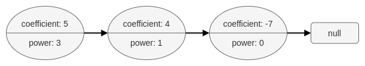
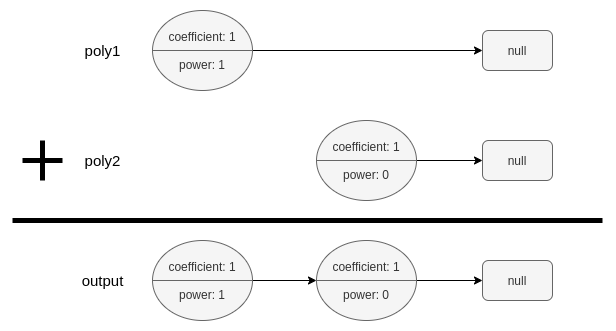

| Category | Difficulty | Likes | Dislikes |
|---|---|---|---|
| Algorithms | Medium | 173 | 14 |
amazon
A polynomial linked list is a special type of linked list where every node represents a term in a polynomial expression.
Each node has three attributes:
coefficient: an integer representing the number multiplier of the term. The coefficient of the term 9x4 is 9.power: an integer representing the exponent. The power of the term 9x4 is 4.next: a pointer to the next node in the list, or null if it is the last node of the list.For example, the polynomial 5x3 + 4x - 7 is represented by the polynomial linked list illustrated below:

The polynomial linked list must be in its standard form: the polynomial must be in strictly descending order by its power value. Also, terms with a coefficient of 0 are omitted.
Given two polynomial linked list heads, poly1 and poly2, add the polynomials together and return the head of the sum of the polynomials.
PolyNode format:
The input/output format is as a list of n nodes, where each node is represented as its [coefficient, power]. For example, the polynomial 5x3 + 4x - 7 would be represented as: [[5,3],[4,1],[-7,0]].
Example 1:

Input: poly1 = [[1,1]], poly2 = [[1,0]]
Output: [[1,1],[1,0]]
Explanation: poly1 = x. poly2 = 1. The sum is x + 1.Example 2:
Input: poly1 = [[2,2],[4,1],[3,0]], poly2 = [[3,2],[-4,1],[-1,0]]
Output: [[5,2],[2,0]]
Explanation: poly1 = 2x2 + 4x + 3. poly2 = 3x2 - 4x - 1. The sum is 5x2 + 2. Notice that we omit the "0x" term.Example 3:
Input: poly1 = [[1,2]], poly2 = [[-1,2]]
Output: []
Explanation: The sum is 0. We return an empty list.
Constraints:
0 <= n <= 104-109 <= PolyNode.coefficient <= 109PolyNode.coefficient != 00 <= PolyNode.power <= 109PolyNode.power > PolyNode.next.power